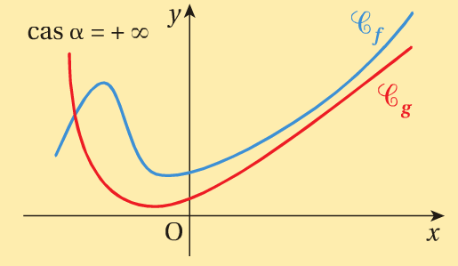
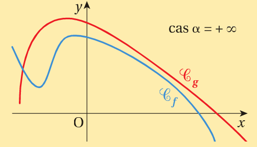

\(\forall n\in\mathbb{N}^{*} \lim\limits_{x \to +\infty} x^{n}=+\infty \text{ , } \lim\limits_{x \to +\infty} \dfrac{1}{x^{n}}=0^{+} \)
\( \forall n\in\mathbb{N}^{*} \lim\limits_{x \to -\infty} x^{n} = \begin{cases} +\infty \text{ si \(n\) est pair}\\ -\infty \text{ si \(n\) est pair} \end{cases} \text{ , } \lim\limits_{x \to -\infty} \dfrac{1}{x^{n}}= \begin{cases} 0^{+} \text{ si \(n\) est pair}\\ 0^{-} \text{ si \(n\) est pair} \end{cases} \)
\(\lim\limits_{x \to +\infty} \sqrt{x}=+\infty \text{ , } \lim\limits_{x \to +\infty} \dfrac{1}{\sqrt{x}}=0^{+}\)
\(\lim\limits_{x \to a^{+}} \dfrac{1}{x-a}=+\infty \text{ , } \lim\limits_{x \to a^{-}} \dfrac{1}{x-a}=-\infty\)
Autre Notation\( ( x\rightarrow a^{+} ) \Leftrightarrow ( x\rightarrow a_{>} ) \text{ , } ( x\rightarrow a^{-} ) \Leftrightarrow ( x\rightarrow a_{<} )\)
\( \lim\limits_{x \to a^{+}} f(x)=+\infty \text{ se note aussi } \lim\limits_{x \to a_{>}} f(x)=+\infty \)
\( \lim\limits_{x \to a^{-}} f(x)=-\infty \text{ se note aussi } \lim\limits_{x \to a_{ <}} f(x)=-\infty \)
Soient \( f \) et \( g \) trois fonctions définies sur un intervalle \( I \) au voisianage \( \alpha \), \( \alpha \) étant un réel, \( +\infty \) ou \( -\infty \).
\( \text{ Si pour tout \( x\in I \): } \begin{cases} f(x)\geq g(x)\\ \lim\limits_{x \to \alpha}g(x)=+\infty \end{cases} \text{ alors } \lim\limits_{x \to \alpha}f(x)=+\infty \)
\( \text{Si pour tout \( x\in I \): } \begin{cases} f(x)\leq g(x)\\ \lim\limits_{x \to \alpha}g(x)=-\infty \end{cases} \text{ alors } \lim\limits_{x \to \alpha}f(x)=-\infty \)
\( \text{Soit \( f(x)=-x+\sin x \) Calculer }\lim\limits_{x \to +\infty} f(x) \)
\( \text{Pour tout \(x\), \( \sin x\leq 1 \implies -x + \sin x \leq 1 - x \implies f(x)\leq 1 - x \).} \)
\( \text{Posons \( g(x)=1-x \) donc \( f(x)\leq g(x) \).} \)
\( \text{Or,} \lim_{x \to +\infty}g(x)=-\infty, \text{donc} \lim\limits_{x \to +\infty}f(x)=-\infty \)
\( \text{Soit \( g(x)=\frac{\sqrt{1+x^{2}}}{x^{2}} \). Calculer }\lim\limits_{x \to 0} g(x) \)
\( \text{Posons \( f(x)=\frac{1}{x^{2}} \). Comme, pour tout \(x\neq 0\), on a, \( 1\leq \sqrt{1+x^{2}} \)., on a, pour tout }, x\neq 0 \)
\( f(x)\geq g(x) \text{ Or,} \lim_{x \to 0}g(x)=+\infty, \text{donc} \lim_{x \to 0}f(x)=+\infty \)
Soient \( f \), \( g \) et \( h \) trois fonctions définies sur un intervalle \( I \) au voisianage \( \alpha \), \( \alpha \) étant un réel, \( +\infty \) ou \( -\infty \).
\( \text{ Si \( \forall x\in I \) } \begin{cases} \quad g(x) \leq f(x)\leq h(x) \\ \lim\limits_{x \to \alpha}g(x)=\lim\limits_{x \to \alpha}h(x)=\ell, \end{cases} \text{ alors } \lim\limits_{x \to \alpha}f(x)=\ell \)
\( \text{ Calculer } \lim_{ x\to +\infty} \frac{x-\sin x}{x^{2}} \)
Revoir
[Continuité à gauche et continuité à droite]
[Continuité à gauche et continuité à droite]
[Prolongement par continuité]
[Continuité sur un intervalle]
[Continuité de fonctions usuelles]
[Opérations sur les fonctions continues]
Méthode de dichotomie(Approche par exemple)
Méthode de balayage(Approche par exemple)[Exercice]